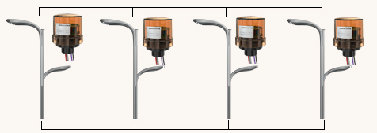
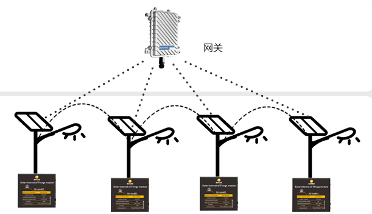

Build smarter, more efficient street lighting with Wi-SUN wireless mesh networking technology.
The Wi-SUN Street Light Controller is designed for next-generation smart lighting networks. Using the Wi-SUN FAN (Field Area Network) protocol, it enables large-scale wireless mesh communication across thousands of streetlights — all connected through a single gateway. This allows real-time monitoring, adaptive brightness control, and reduced energy consumption for both solar and grid-powered systems.
Each light controller acts as a router node, ensuring continuous connectivity even if one path fails.
No SIM cards, no monthly fees — one gateway manages hundreds of nodes wirelessly.
Automatically adjusts light levels based on time schedules, motion, or environmental brightness.
Support remote data analytics, fault alarms, and parameter configuration through IoT platform integration.
IPv6-based communication with AES encryption ensures robust network security and data integrity.
The Wi-SUN network allows each streetlight controller to connect with neighboring devices, forming a multi-hop wireless mesh. Only one gateway is required to connect hundreds of nodes to the cloud, significantly reducing installation and maintenance costs.
City-wide lighting management with remote monitoring, dimming, and fault detection.
Ideal for off-grid projects using solar power, ensuring stable communication without cellular networks.
Reliable wireless control for large industrial parks, smart campuses, and parking lots.
Eliminate SIM card and data charges — scale your network at a fraction of the cost of 4G solutions.
One gateway covers hundreds of streetlights with stable connectivity and self-healing mesh routing.
Wi-SUN operates reliably even in areas with weak or no cellular coverage.
Looking for a trusted partner for Wi-SUN smart lighting solutions? We offer OEM/ODM customization, integration support, and global shipment.